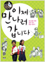

이제 만나러 갑니다 (청소년을 위한 살아 있는 북한 이야기)

- 자료유형
- 단행본
- 개인저자
- 발행사항
- 서울 :인물과사상사,2013
- 형태사항
- 309 p. :삽화, 계보, 지도 ;23 cm
- ISBN
- 9788959062409
- 서지주기
- 참고문헌: p. 309
북한자료센터의 북한관련 소장자료를 검색할 수 있습니다.
| 번호 | 등록번호 | 소장위치 | 청구기호 | 도서상태 | 반납예정일 | 서비스 |
|---|---|---|---|---|---|---|
| 1 | EM0000065224 | 임시서고 | 342 안36 | 열람가능 | 2017.10.01 |
[진짜 마음 가짜 마음]에서 말하는 진짜 마음은 ‘행복과 사랑’이며 가짜 마음은 ‘불행과 집착’이다. 이 책은 가짜 마음을 키우며 사는 사람들에게 행복으로 가는 문을 한가지씩 열어 주고 있다.
남북한이 만나는 것은 한반도 문제 해결의 지름길이다. 북한과 대화하고 협력하고, 그런 관계를 만드는 게 남한으로서는 쉬운 일이 아니다. 북한은 때로 떼를 쓰기고 하고 억지도 부린다. 대화 상대로 까칠하기 이를 데 없다. 하지만 북한과 협상하고 대화하지 않으면 남북한에 손해가 되는 것은 자명하다. 북한과 이야기를 하자면 북한에 대해 아는 것은 기본 중의 기본이다. 전문가뿐만 아니라 중고생도 대학생도 일반 시민들도 북한에 대해 많이 알아야 한다. 그래야 북한이 떼를 쓸 때, 북한이 협상을 깰 때 그들의 속내를 짐작이나마 할 수 있게 된다.
『이제 만나러 갑니다』는 북한에 대한 올바른 정보를 제공하는데 이해를 주기 위해 쓰여졌다. 우리 청소년들이 학교에서 북한에 대해 올바른 교육을 받았는지 되돌아보게 하며 북한 사람들이 무엇을 입고 먹는지, 김정은은 어떤 사람인지, 핵무기는 포기할 수 있는지, 북한과 미국이 수교할 수 있는지, 통일 비용은 얼마나 드는지 등 북한에 대한 거의 모든 정보와 이슈를 이해한다면 북한을 제대로 알 수 있도록 돕는다.
책머리에4 1장 북한의 일상생활 이야기 북한의 의식주 생활13 북한의 여가 생활22 북한 사람들은 어떻게 결혼하는가?28 북한에는 어떤 직업이 있는가?34 북한에서도 휴대전화와 인터넷을 사용하는가?45 북한과 남한의 언어51 2장 북한의 사회와 교육 이야기 북한의 학교에서는 어떤 과목을 배우는가?61 북한에도 대학 입시나 과외가 있는가?74 북한에 변호사는 있는가?80 북한의 병원은 무상인가?89 3장 북한의 정치 이야기 김정은은 어떤 사람인가?97 북한의 3대 세습은 어떻게 가능하였는가?115 북한의 권력기관125 북한에도 선거가 있는가?135 북한의 행정구역은 어떻게 나누어지는가?143 4장 북한의 군사와 외교 이야기 북한군의 규모는 얼마나 되는가?161 북한은 핵무기를 얼마나 갖고 있는가?173 북한은 핵무기를 포기할 수 있는가?181 북미 수교는 가능한가?190 5장 북한의 경제 이야기 북한의 경제난은 얼마나 심각한가?203 북한에도 시장이 있는가?211 북한 사람들은 사유재산을 가질 수 있는가?219 북한의 협동농장은 어떻게 운영되는가?224 6장 남북 관계 이야기 북방한계선은 왜 논란의 대상인가?235 북한은 아직도 적화통일을 꿈꾸는가?242 남북한 경제 교류는 계속해야 하는가?258 북한을 지원해야 하는가?266 7장 통일 이야기 남북통일은 왜 해야 하는가?275 남북통일 비용은 얼마나 드는가?283 남북한 통일 방안은 무엇인가?288 남북통일을 주변국들은 어떻게 생각하는가?300 참고문헌309
| 이미지 | 자료명 | 저자 | 출판사 | 출판년 |
|---|---|---|---|---|
 |
정밀 메커니즘 설계 : 자동화·메카트로닉스 시스템정밀 | 이진갑 저 | 문운당 | 2015 |
 |
미식의 도시 뉴욕 : 세계의 푸디가 모이는 맛의 천국 : 뉴욕맛집 완벽가이드 | 제이민 지음 | 중앙books | 2016 |
| 제목 |
|
|---|---|
| 별점선택 |
|